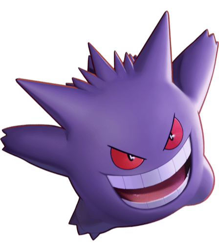
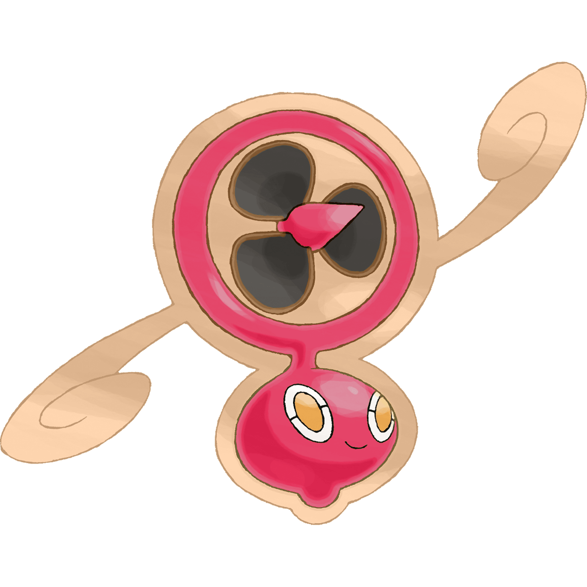
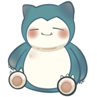
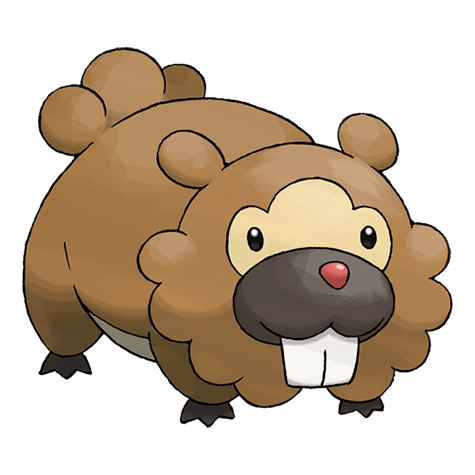
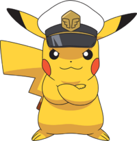
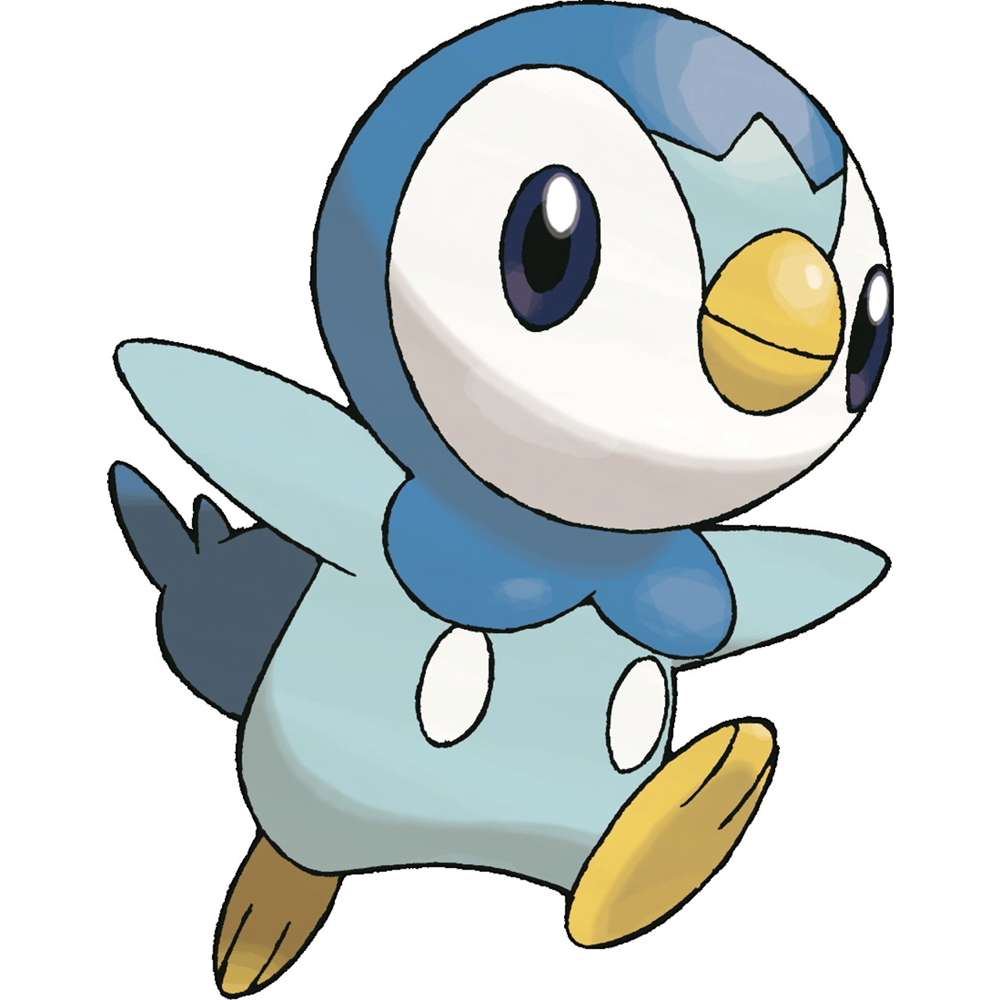

Gengar
Gengar es un Pokémon de tipo Fantasma y Veneno. Es conocido por ser travieso, se esconde en las sombras y puede absorber el calor de su alrededor.

Rotom
Rotom es un Pokémon de tipo Eléctrico y Fantasma. Es capaz de poseer electrodomésticos y cambiar de forma para adaptarse a su entorno.

Snorlax
Snorlax es un Pokémon de tipo Normal. Pasa la mayor parte del tiempo durmiendo, pero cuando despierta, come enormes cantidades de comida.

Bidoof
Bidoof es un Pokémon de tipo Normal. Es conocido por su apariencia tonta y sus hábitos constructores, ya que construye diques y presas en el agua.

Pikachu
Pikachu es un Pokémon de tipo Eléctrico y es la mascota oficial de la franquicia. Puede generar electricidad almacenada en sus mejillas y liberarla en poderosos rayos.

Piplup
Piplup es un Pokémon de tipo Agua. Es valiente y tiene una gran personalidad, aunque sufre con el frío. Se caracteriza por su plumaje azul y su actitud firme.